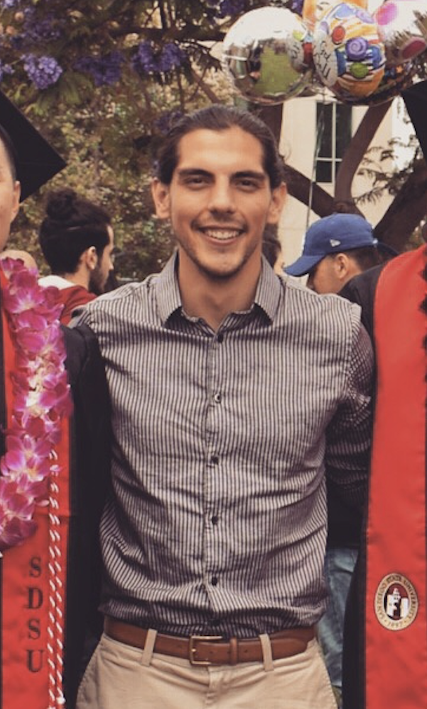

Hello, I'm Fil
I'm a software developer based in San Diego, CA. As a former soccer coach and bartender, I enjoy working as part of a driven team in fast paced environments, solving complex problems as quickly and efficiently as possible with extreme attention to detail.
Technologies:
- Javascript
- HTML
- CSS
- ... more on the way
About Me
I am an individual with a passion for learning and solving problems. This is why I have decided to join thinkful to become a software engineer. Life is complex and often very complicated, so I am committed to simplifying the human experience with the use of technology.
I have spent most of my working life in the restaurant industry where until recently, most of the technology used has been fairly outdated. Though POS systems have caught up with the times, many systems within most restaurants are yet to be automated or improved via technology and I would like to implement some of my ideas to streamline many of these systems myself.
Outside of my experience in the restaurant industry, I spent most of my life playing and coaching competitive soccer. Through that experience, I developed a strong desire to work within team environments where each individual is committed to the success of the collective unit, and is constantly pushing him or herself as well as those around them to get the best out of themselves and bring about constant improvement.
If you are looking for a software devoper to hire or colaberate with on a project feel free to reach out!
Contact
You can connect with me via: